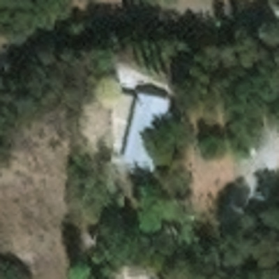
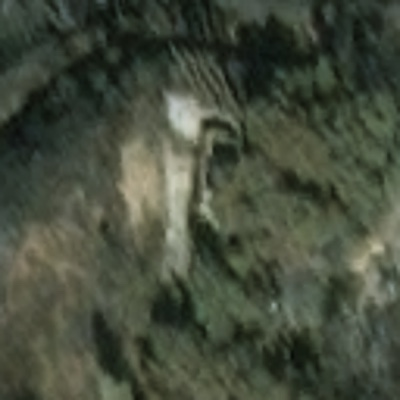

Fine-Tuning a Vision-Language Model, End to End
Learning project
A hands-on study of VLM adaptation from scratch — building the data pipeline, running the LoRA training loop, and (the actual point) learning how to measure whether fine-tuning helped at all: the delta against the same model zero-shot. The task — grading building damage in satellite imagery, conditioned on event context — is just a convenient, richly-labeled dataset (xBD) to learn the mechanics on, not a disaster-response product. The deliverable is fluency, and being precise about what the artifact does and doesn't prove. Full write-up in the repo.


event: socal-fire · wildfire · +3d
DESTROYED
Triage · Priority 1
Evidence: structure footprint no longer intact; scorched-ground signature replaces roofline and canopy.
illustrative task output · the format the model learns to emit
304,370Buildings parsed
19Disaster events
8,310Image chips built
Zero-shotBaseline measured